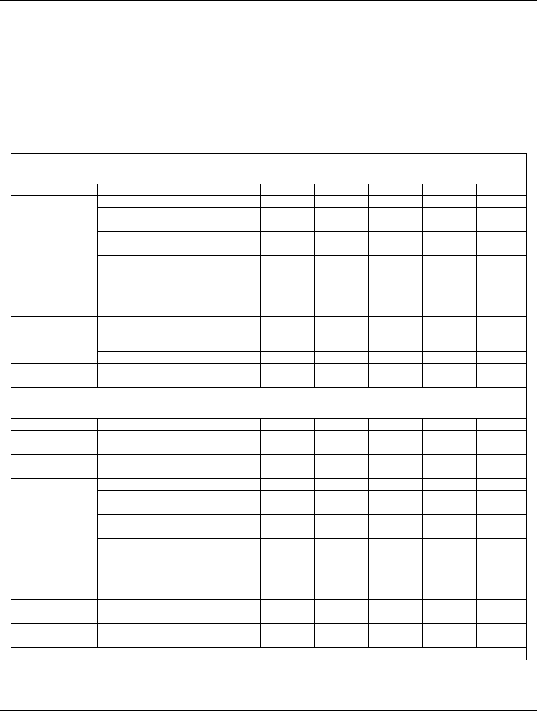
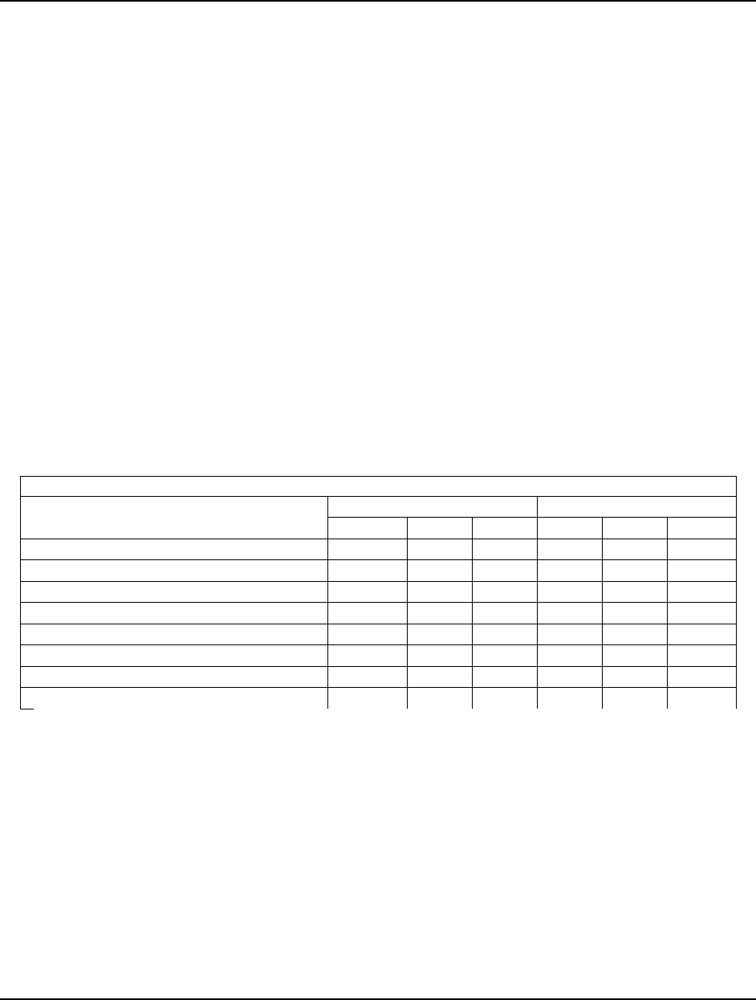
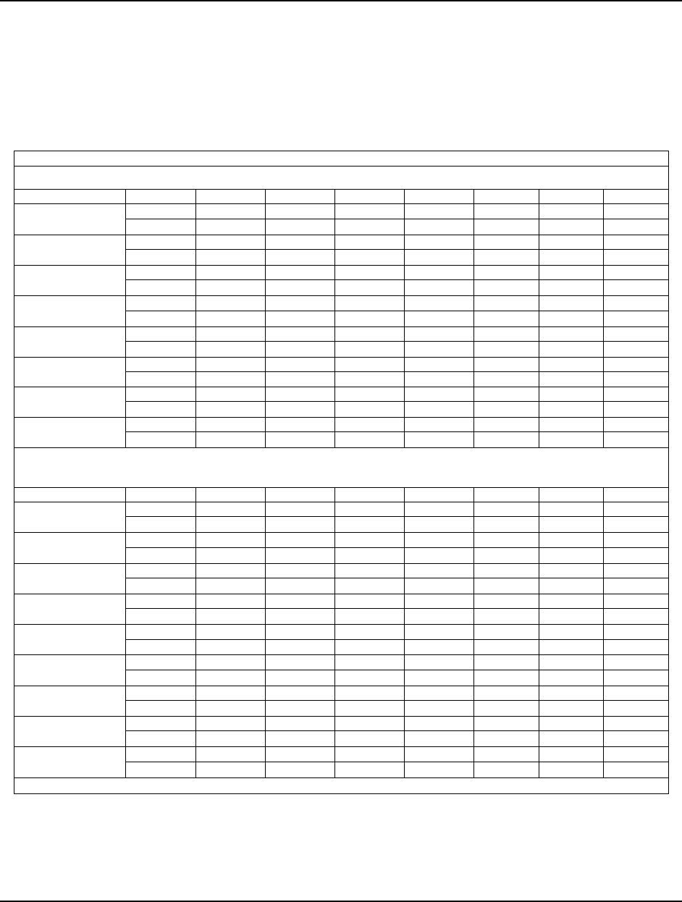
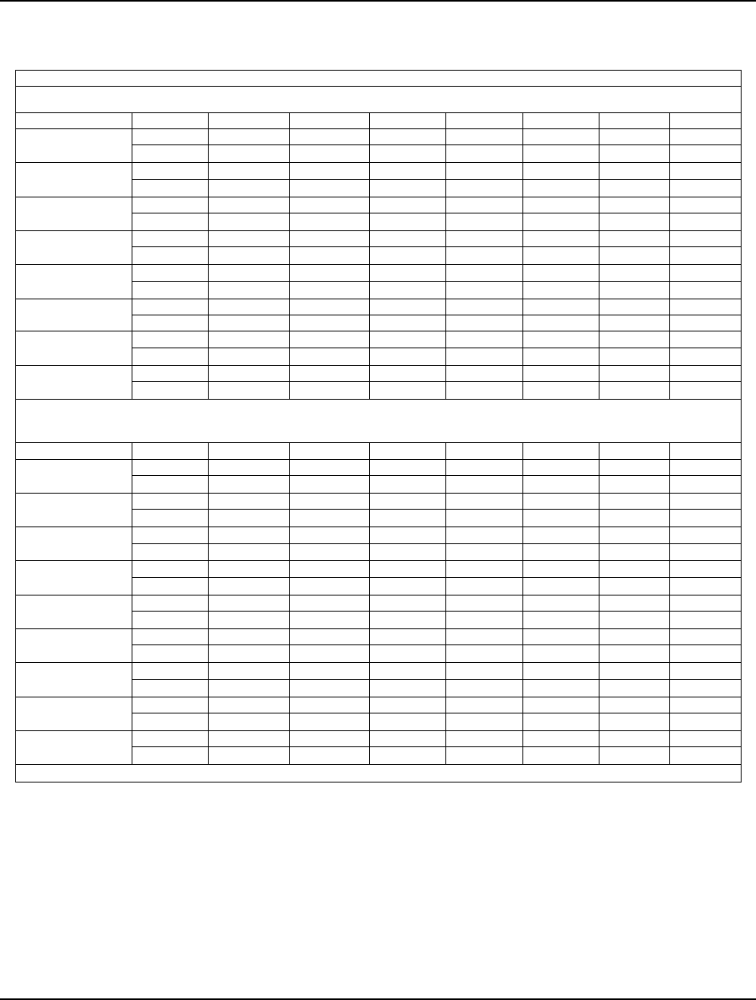

Page 61
Academy of Marketing Studies Journal, Volume 17, Number 1, 2013
IS THE ELECTRONIC WORD OF MOUTH EFFECT
ALWAYS POSITIVE ON THE MOVIE?
1
Bae, Jungho, Seoul National University
Kim, Byung-Do, Seoul National University
ABSTRACT
Previous studies have been arguing that the movie revenue is affected by the volume or
the valence or both of electronic word of mouth (Liu, 2006; Chintagunta et al., 2010, Bae et al.
2010). Those studies analyzed the effect of the electronic word of mouth (eWOM) in the film
industry with the assumption that the volume of eWOM unilaterally affects revenue. However,
they overlooked that box-office revenue, in turn, can influence the volume of eWOM. Therefore,
in this study, a simultaneous equation that considers the influence of box-office revenue on
eWOM as well is formulated. The authors found that the valence of eWOM affects box-office
revenue and the volume of eWOM is not cause of the revenue except the first week. The volume
of eWOM is affected by the revenue on the contrary.
The authors also found that eWOM effect in the result above does not work on the
successful movie. Because the audiences have a lot of information sources about the successful
movie, they don’t have to check out the eWOM on the website before going to movie theater. But,
in the case of the unsuccessful movie the audiences don’t have enough sources to gather the
information about the movie except eWOM on the website, so that eWOM is critical to them. The
authors conclude that the movie companies have to use the eWOM as an important
communication channel especially if it is expected to be the unsuccessful movie.
INTRODUCTION
Word-of-mouth(WOM) and electronic word-of-mouth (eWOM), which are forms of
customer-to-customer information exchange, have become subjects of interest for companies and
marketing researchers as possible alternatives for traditional mass-media commercial
advertisements, which have been losing their appeal due to increased competition.
WOM is distinct from traditional sources of information, such as commercial
advertisements, in two ways. First, WOM provides more credibility to customers than other
sources of information. Beck (1992) explained the uniquely credible status of WOM as an
information source, by arguing that WOM has a stronger influence on the purchasing decisions
of customers because it is perceived as advices from other customers faced with similar
circumstances. In particular, WOM has been found to be especially influential when customers
make purchasing choices about newly-released products that they are aware of but are not well-

Page 62
Academy of Marketing Studies Journal, Volume 17, Number 1, 2013
informed about (Mahajan, Miller, and Kerin, 1984). Films, by nature, exhibit characteristics that
are largely similar to those of newly-released products, and it has also been well established that
WOM generally has a significant effect on the movie-going choices of customers (Austin, 1989;
Bayus, 1985; Faber and O’Guinn, 1984; Neelamegham and Chintagunta, 1999).
Second, unlike advertisements, which are transmitted to customers via mass-media,
WOM information is easily accessible for customers via social networks (Benerjee, 1992; Brown
and Reingen, 1987; Murray, 1991). The accessibility of eWOM has vastly expanded due to the
rapid growth of the Internet population and is now available via various channels and forms such
as Internet messengers, online forums, communities, or purchase reviews posted on shopping
websites. The resulting eWOM is exerting an even larger influence on the information searching
and purchase decision-making actions of customers than the offline WOM of the past (Bussiere,
2000; Chatterjee, 2001). Many websites are being used not only as providers of product
information, but also as forums for information exchange, and heavily influence the purchasing
decisions of customers. A few marketing studies that have been conducted on the subject of
WOM data include: one study on the effect of WOM information from Usenet newsgroups on
television shows (Godes and Mayzlin, 2004); one study on the effect of eWOM information on
revenue, which analyzed the customer review data accumulated in the two online bookstores of
Amazon.com and BarnesandNobles.com (Chevalier and Mayzlin, 2006); and one study on the
effect of movie reviews posted on Yahoo.com on box-office revenue (Liu, 2006).
This study has two objectives. The one is to identify the effects between box-office
revenue and the volume as well as valence of movie reviews posted in the film sections of portal
websites. The structure in the first analysis was more elaborate model in the previous studies
(Bae et al. 2010). The other is to find out if the eWOM effects in the former result are equally
applied to all the movies regardless of their revenue difference.
THEORETICAL BACKGROUND
Definition and Characteristics of WOM and EWOM
The term “word-of-mouth(WOM)” was first used in a marketing study by Whyte, which
was published in a 1954 edition of the Fortune magazine. Each researchers have adopted
different definitions of WOM, but all agree that it consists of oral interpersonal communication.
Zaltman and Wallendorf (1979) defined WOM communication as a non-profit interpersonal
activity involving the direct conveyance and acquirement of information via conversation. Arker
and Myers (1982) defined WOM as a form of advertising communication in which the
advertisement recipient becomes an information source to those around him. Ritchins (1983)
understood WOM as a process of information exchange concerning a product, which occurs in
the consumer market.

Page 63
Academy of Marketing Studies Journal, Volume 17, Number 1, 2013
WOM communication is considered a more credible source of information than
commercial advertisements, because the information provider evaluates products and services
according to his independent judgment instead of advocating corporate interests (Silverman,
2001). Customers have been shown to be greatly influenced by WOM information in making
purchasing decisions in a survey by McKinsey, which reported that 67% of customers rely on
WOM information when purchasing products (Taylor, 2003). Particularly in the case of the
purchase of newly-released products, which pose risks stemming from deficient information,
WOM has been found to play an even larger role than usual (Mahajan, Muller, and Kerin, 1984).
This is because of the fact that WOM provides credible information which decreases the risks
that accompany the decisions of the customers.
Electronic word-of-mouth(eWOM) occurs in the virtual world of the Internet (Bussiere,
2000; Henning-Thurau and Walsh, 2003; Henning-Thurau et al., 2004) such as Internet
communities, purchase reviews posted in shopping websites, and audience scores about the
movie. Chatterjee (2001) argues that eWOM, compared to its off-line counterpart, provides both
positive and negative information simultaneously from more diverse and numerous sources.
Chevalier and Mayzlin (2006) as well as Henning-Thurau et al. (2004) characterized eWOM as a
convenient form of communication that possesses anonymity, as well as freedom from the
restrictions imposed by time and space.
eWOM can bring about different results according to the means by which it is employed.
Companies can take advantage of its anonymity by using it to disseminate marketing messages in
the guise of customer opinions, which can lead to better results than traditional marketing
techniques (Mayzlin, 2006). Chen and Xie (2008) examined the relationship between product
descriptions provided by sellers and online product reviews posted by customers. As a result, it
was found that product description and customers’ online evaluation take on a more
complementary role under the condition that the price of a product is low and its customers have
a lot of information about the product. eWOM is a communication channel capable of rapidly
disseminating large volumes of information (Bickart and Schindler 2002; Chatterjee 2001), and
much research is being conducted to investigate methods to reach customers through eWOM as
well as more traditional marketing techniques.
Previous Studies on Movie Success Factors
Existing literature on movie success factors can be categorized into studies on the factors
that consist of the properties of the films themselves and those that consist of customer
information sources regarding the films. With respect to the former, Linton and Petrovich (1988)
studied 15 properties of film including its characters, story, and background etc., amongst which
the characters, story, and acting properties were identified to be important success factors. Also,
Litman and Kohl (1989) studied the intrinsic properties and success factors of film and

Page 64
Academy of Marketing Studies Journal, Volume 17, Number 1, 2013
categorized them into areas of properties (genre, appearance of star actors, rating, country of
production, filming budget) and scheduling, distribution marketing efforts.
Studies on the influence of information sources have focused on critical
reviews(professional film reviews), previews, advertisement, and WOM. Although various
studies identified different factors as being influential in each category, WOM and critical
reviews were consistently found to be the most important information sources for customers. The
importance of WOM in film success has been well verified in various studies. Faber and O’Guin
(1984) argued that previews and WOM were the most credible sources of information in
evaluating movies, and many other studies have concluded that WOM has an important effect on
customers’ expectations, scores, and movie-going choices, as well as films’ success (Austin and
Gordon, 1987; Mahajan et al., 1984; Levene, 1992; Zufryden, 1996).
Studies on critical reviews, unlike those on WOM, offer differing conclusions.
Hirschman and Pieros (1985) showed the existence of a negative correlation between box-office
revenue and critical reviews. Faber and O’Guin (1984) verified the existence of a more important
success factor in movies than critical reviews and Eliashberg and Shugan (1997) found that the
influence of critical reviews changed with passing time. Litman (1983) identified the distributor,
a Christmas season release date, and critical reviews as major factors in film success, while
Basuroy et al. (2003) argued that critical reviews acted as predictors for the success of a movie in
its initial and later phases of release. Studies on critical reviews have thus yielded mixed
conclusions, with their being no clear consensus regarding their influence on box-office revenue.
Existing Studies on the WOM Effect in the Film Industry
The film industry is characterized by its high-risk, high-return nature. Various studies
have verified that 6 to 7 out of 10 released movies turn out to be less than profitable (Liu, 2006;
Vogel, 2001; Shugan, 1995). Even in the case of large film production and distribution
companies, the majority of their profits derive from a small number of blockbuster films, which
has led them to increase investment in their advertisement (Eliashberg et al., 2006). Due to the
nature of the film industry, there have been many studies on the various factors that influence
films’ success, and the WOM effect has been considered to be an important movie success
factor.
The volume and valence of WOM have been studied as their most important attributes
(Mahajan et al., 1984; Neelamegham and Chintagunta, 1999). The volume of WOM refers to the
amount of WOM messages, while the valence of WOM shows the degree to which the messages
convey positive or negative assessments or sentiments.
Dellarocas et al. (2004), building on the Bass model, estimated the Bass parameters (p, q)
of the coefficient of innovation (p) and the coefficient of imitation (q) based on audience scores
during the initial week of release. The size and density (the ratio between the initial-week box-
office revenue and audience score size) of audience scores during the initial week of release were

Page 65
Academy of Marketing Studies Journal, Volume 17, Number 1, 2013
shown to be useful in estimating p, while the scores themselves were shown to have explanatory
power with regard to q. Duan et al. (2005) studied the daily relationship between audience scores
and box-office revenue during the first two weeks of release through panel data analysis. They
concluded that, while audience scores did not have significant explanatory power with regard to
box-office revenue, the volume of WOM did. Liu (2006) found that the valence of WOM was
higher before release, when expectations are higher, than after. According to this study, the
valence of WOM did not have significant explanatory power with regard to box-office revenue.
Moon et al. (2010) argued that box-office revenue exert a positive influence on the valence of the
WOM of general customers, while the WOM effect (consisting of both reviews by professional
critics and audience scores) only had a significant influence on box-office revenue when
advertisements were employed at the same time. Chintagunta et al. (2010) found that the factor
which influence the movie revenue is not the volume of the eWOM but the valence of it.
PURPOSES OF THIS STUDY
Some studies on the relationship between the movie revenue and WOM have asserted
that, while the volume of WOM has a positive influence on box-office revenue, the valence of
WOM does not affect box-office revenue (Liu, 2006; Duan et al., 2005). Others maintained that
the factor influencing the movie revenue is the valence of eWOM (Chintagunta et al., 2010). In
this study, the authors identify the relationship between the revenue and eWom under the
consideration of mutual effects between both factors using Korean movie data. For verifying
this, the authors improve the model in the previous studies (Bae et al., 2010) and propose a better
structure regarding the relationship between the volume of WOM and box-office revenue.
Existing studies on the film industry have assumed WOM to be an independent variable that
affects box-office revenue. However, a more realistic assumption is one in which box-office
revenue induced by WOM affects the volume of WOM again, the increase of which will also
affect revenue. That is, previous studies have failed to consider the effect of the relationships and
have overlooked the fact that WOM and box-office revenue have an endogenous relationship of
mutual influence. Therefore, in this study, we will assume that box-office revenue and WOM
volume exhibit a simultaneous and mutual influence, and define two variables as endogenous
variables to perform analysis using a simultaneous equation. We expect that this will allow us to
formulate a clear conclusion on whether WOM volume unilaterally affects box-office revenue,
or vice versa, or if each of the variables are mutual causes for changes in the other.
Finally, the effect of eWOM might be different between high revenue movie and low
revenue movie because the movie earning a lot of revenue has numerous information sources
besides eWOM to let the audiences be exposed to the movie like You Tube, twitter, Facebook,
Online Community and etc. It means that the audiences don’t need to check the eWOM out
before going to the theater because they already know the movie is great through other

Page 66
Academy of Marketing Studies Journal, Volume 17, Number 1, 2013
information sources. Therefore there might be a small eWOM effect or no effect in the
successful movies.
RESEARCH MODEL
Data Collection
Data collection was performed upon the websites of Naver Movies (movie.naver.com),
the Korean Film Council (www.kobis.or.kr), and Interpark Movies (movie.interpark.com), using
a custom-programmed web crawler. Among the many websites with eWOM data, Naver Movies
was chosen for the following reasons. First, Naver Movies, with its 32 million members as of
August 2008, has, by far, the largest user base among similar sites, which allowed us to obtain a
much larger and diverse sample of eWOM. Also, the extensive database of Naver Movies
enables users to evaluate all films that have ever been domestically released. Second, Naver
Movies requires users to log in to submit scores and allows each user to submit only one score
per movie, which effectively prevents the possibility of a small number of users manipulating the
overall scores. Third, the date, time, and score of each eWOM posting in Naver Movies are
stored along with ID information of the poster, and all comments and movie data are stored
permanently unless deleted by the original poster. Therefore, it is possible to accurately measure
the valence and volume of WOM at any particular time after the release of a particular movie, by
measuring the number of comments for a single movie by date, obtaining a weekly sum, and
setting the result as the variable for the volume of eWOM; and obtaining the weekly average of
the scores given in each comment and setting the result as the variable for the valence of eWOM.
Finally, Naver Movies allows users to not only submit scores, but also share full reviews, and
also provides critical reviews and news articles from such film magazines as Cine 21 and Film
2.0, thus allowing for the collection of additional data.
Box-office revenue data was obtained from the integrated movie ticket network of the
Korean Film Council, by collecting information from the box office page for the research period
ranging from January 2005 to December 2007. The weekly sum of the collected data, beginning
at the date of release, was obtained.
As film information, including rating, running time, and genre, was often left out in the
Naver Movies website, information from the Interpark Movies website was collected and used,
as well as compared with data from the Naver Movies website. The ratings and running time
information provided on the Naver and Interpark Movie websites were consistent with each other
excluding those that were omitted in one site, and while genre information showed some
difference due to categorizing difficulties, the differences in the other variables were verified to
be small enough to not have any statistically significant influence.

Page 67
Academy of Marketing Studies Journal, Volume 17, Number 1, 2013
Declaration of Variables and Summary Statistics
Daily box-office data from the integrated movie ticket network of the Korean Film
Council was gathered and added to obtain the box-office sales for each week of the first 8 weeks
of release, the results of which were used as the box-office revenue data variable (LNREV).
eWOM data was gathered by collecting Naver Movies comments, scores, and posting date. The
eWOM volume variable (LNMSG) denotes the weekly sum of the daily data of the number of
comments for a particular film obtained for the first 8 weeks of its release. The WOM valence
variable (RATING) denotes the weekly average of the scores given in each comment. The WOM
variance variable (VAR) denote the variance of weekly scores.
The number of opening screens (SCRN) importantly affects box-office revenue, and its
value changes daily. Therefore, the value for this variable was obtained by collecting daily data
from the integrated movie ticket network and calculating their weekly average for the first 8
weeks of release.
Film information was collected from Naver Movies and Interpark Movies and matched
with the title information listed on the integrated movie ticket network of the Korean Film
Council. Detailed information including ratings (DPG, DR), genre (GACTION, GCOMEDY,
GSF), and star actor appearance (STAR) were obtained primarily from Interpark Movies, with
Naver Movies as a secondary and alternative source.
Movie scores submitted by professional critics (CRATING) was collected from the ‘Cine
21’ service section of the Naver Movies website. The movie scores showed in the ‘Cine 21’
section are the average values of aggregated film critic movie scores. The highest score is 10,
and higher scores indicate more positive reviews.
A variable for the number of new releases among the top 10 movies of week t (NEW) was
included, along with another for the average time that the top 10 films of week t remained in
theaters (AGE). These two variables (Elberse and Eliashberg, 2003) show the level of
competition within a given week, in that, in the case of the former, the more the number of high-
grossing films in the top 10 mark that were released in week t, the smaller will the relative
volume of WOM for the study subject films. In the case of the latter, the shorter the average time
in theater for high-grossing films in the top 10 mark, the larger the volume of WOM for these
films, which may, in turn, reduce the volume of WOM for the study subject films. The data for
these variables were collected from the weekly box-office data of the Korean Film Council
integrated movie ticket network. The names and definitions of the variables used for statistical
analysis in this study are listed below in <Table 1>.
Page 68
Academy of Marketing Studies Journal, Volume 17, Number 1, 2013
Table 1: List of Variables Used in Analysis of the Relationship between WOM and Box-Office Revenue
Name of variable
Definition
t Elapsed time since date of release (weeks)
AGE
t
Average time in theaters for top 10 movies released in week t
CRATING Scores submitted by professional critics
DPG PG Rating
DR R Rating
GACTION Action/Adventure Genre
GCOMEDY Comedy Genre
GSF SF Genre
LNMSG
t
Volume of WOM during Week t (natural log)
LNREV
t
Box-Office Revenue of Week t (natural log)
NEW
t
Number of Top 10 Films for Week t that were newly released during Week t
RATING
t
Average Audience Score for Week t
SCRN
t
Number of Showing Theaters for Week t
STAR Star Actor Appearance
VAR
t
The Variance of the Score for Week t
The final data set we used only contained films released during the research period of
January 1, 2005 to December 31, 2007. Also, under the assumption that art films, independent
films, and re-releases are viewed by few audiences and are therefore inadequate for judging the
effects of WOM, the subjects of this study were limited to films that had sold over 100,000
tickets during its first 8 weeks of release, which left us with 439 subject films. This assumption
was adopted under concerns that, in the case of films with small audience numbers, the nature of
this study, which employs the average value of evaluation scores submitted by audiences, would
cause the opinions of a few members of the audience to appear as representing the general
consensus regarding the film. Therefore, excluding these films from the analysis entirely was
judged to be more appropriate. Pertaining to the films that were employed as subjects in this
study, the total number of audience amounted to 405 million, the total volume of WOM data
numbered 746,282, the total box-office revenue counted 2.08 billion dollars and the number of
reviews by professional critics to 1,105. The summary statistics of the variables used in the
statistical analysis of this study, as well as those variables that are considered important in the
film industry, are laid out below in <Table 2>.
Page 69
Academy of Marketing Studies Journal, Volume 17, Number 1, 2013
Table 2: Summary Statistics of the Movie Sample
Name of variable
M Median SD
Total number of audience 922,738 456,859 1,284,716
Accumulated revenue (millions in dollars) 4.75 2.32 6.64
Number of screens in opening week 147.1 129.5 83.9
Volume of WOM (opening week) 441.9 209.0 1,121.4
Audience evaluation score (opening week) 7.23 7.43 1.42
Accumulated volume of WOM 1,705.3 827.0 3,412.4
Accumulated audience evaluation scores 6.99 7.23 1.47
Accumulated critic scores 5.51 5.5 1.14
RESULTS OF EMPIRICAL ANALYSIS
First, we adopted a hypothesis that took into account the previously overlooked
possibility of a mutual relationship between WOM volume and box-office revenue, and
formulated a simultaneous equation to estimate the coefficient values for each variable. Second,
we divided the sample movie into two groups. One is the movies that earn top 50% revenues in
the sample, the other is the movies that earns down 50% revenues in it. After that, we identify
the mutual relationship between eWOM and the box-office revenues like the first analysis. In
order to verify any differences in the influence of each independent variable upon the dependent
variables in different time periods following film release, regression analyses and the
simultaneous equation estimation were performed for each week for the first 8 weeks of film
release.
Mutual Relationship between Volume of WOM and Box-Office Revenue
The relationship between WOM and box-office revenue is not one in which the former
unilaterally affects the latter. A more realistic model is one in which an initial increase in WOM
volume leads to an increase in box-office revenue, which in turn again affects WOM. Therefore,
in this study, a model was set based on a simultaneous equation formulated using <Equation 1>,
in which WOM volume affects box-office revenue, and <Equation 2>, in which box-office
revenue affects WOM. This model makes it possible to determine which variable among WOM
volume and box-office revenue is the cause for the changes of both, or, alternatively, verify the
possibility that both may be mutual causes for changes in the other.
<Equation 1>
,01 ,2 ,3 ,4 5 6 ,it it it it i t t it
LNREV LNMSG RATING SCRN CRATING NEW AGE
α
αα αα ααε
=+ + + + + + +

Page 70
Academy of Marketing Studies Journal, Volume 17, Number 1, 2013
<Equation 2>
,01 ,2 3 4 5
678,
it it i i i i
iiiit
LNMSG LNREV STAR GCOMEDY GACTION GSF
CRATING DPG DR
β
βββ β β
βββε
=+ + + + +
++++
In both <Equation 1> and <Equation 2>, i denotes the individual films (i=1,2,3,…,439),
while t denotes the time, in weeks, elapsed since the release of the film (t=1,2,3,…,8). The
residual term is assumed to follow normal distribution,
2
,
(0, )
it i
N
ε
σ
. In <Equations 1>, the
box-office sales variable(LNREV) is the dependent variable, and the volume of eWOM
(LNMSG), the valence of WOM(RATING), the number of opening screens(SCRN), the
professional critics(CRATING), the competition variables(NEW, AGE), and the variance of
eWOM(VAR) are the independent variables. In <Equation 2>, eWOM volume (LNMSG)
becomes the dependent variable. The variance of eWOM(VAR) and the dummy variables of star
actor appearance (STAR), genre (GCOMEDY, GACTION, GSF), and rating (DPG, DR)
influence eWOM volume. The endogenous variables of <Equation 1> and <Equation 2> are set
as box-office revenue (LNREV) and WOM volume (LNMSG), while the remainder of the
variables declared in this study are set as their exogenous variables.
The estimation results of the two equations, obtained by using the 2SLS method, are
shown in <Table 3>. In <Table 3>, the values listed above each of the variables are coefficient
values, while those on the bottom are t-values. In the result for <Equation 1>table above, eWOM
volume (LNMSG) does not have a significant effect upon box-office revenue after the first week
of release, while eWOM valence has a positive correlation with box-office revenue. These
results imply that the audience takes note of both the audience scores and volume of the eWOM
posted on film information websites until the first week of release, but after that, the valence of
eWOM acts as the primary standard for making movie-going choices. This implies that the
audience put comparatively more importance on the opinions and film reviews of others like
previous studies (Chintagunta et al., 2010). The variable of the number of showing
theaters(SCRN) directly affects box-office revenue, which was reflected in the fact that it exerted
a statistically significant influence on revenue from week 1 through 8. It is so obvious that the
movie played at a lot of theater earns more than others. The variance of eWOM(VAR) doesn’t
show the consistent results, which means it is inconclusive even if they are statistically
significant in a few weeks.
The data below in <Table 3> shows the results of the analysis performed on <Equation
2> of the simultaneous equation, in which box-office revenue affects WOM volume. The
coefficient of the box-office revenue variable (LNREV) remains significantly positive from
week 1 through 8. Considering the fact that the eWOM volume variable (LNMSG) in the data
above in <Table 3> showed no statistically significant trend, it could be concluded that eWOM

Page 71
Academy of Marketing Studies Journal, Volume 17, Number 1, 2013
volume is not the standard by which the audience makes movie-going choices, but is the result of
increased ticket sales, which would lead to more related comments. This hypothesis is in direct
contradiction with those of previous studies which asserted that eWOM volume influences box-
office revenue (Liu, 2006). Even if some of these variations must be due to cross-country
differences, it can be concluded that eWOM volume is a variable that holds little influence. This
result is almost same as the previous studies (Bae et al. 2010) but it is necessary for the second
analysis.
Table 3: Simultaneous Equation between WOM and Box-Office Revenue
,01 ,2 ,3 ,4 5 6 7 ,it it it it i t t t it
LNREV LNMSG RATING SCRN CRATING NEW AGE VAR
α
αα αα αααε
=+ + + + + + + +
Week 1 Week 2 Week 3 Week 4 Week 5 Week 6 Week 7 Week 8
CONST
17.25 19.18 17.58 14.35 12.94 11.80 11.00 10.17
46.59** 44.10** 36.29** 22.91** 17.51** 14.43** 10.55** 7.41**
LNMSG
0.34 0.10 -0.07 -0.37 -0.21 -0.43 -0.27 0.12
4.26** 1.09 -0.53 -1.05 -0.54 -0.93 -0.43 0.31
RATING
0.08 0.07 0.20 0.38 0.35 0.46 0.38 0.38
2.76** 2.76** 5.44** 4.75** 4.45** 4.07** 2.33** 2.76**
SCRN
0.01 0.01 0.01 0.03 0.03 0.04 0.05 0.04
7.53** 9.49** 9.87** 6.32** 5.92** 5.82** 4.43** 6.08**
CRATING
-0.05 -0.05 -0.05 -0.08 -0.05 0.00 0.06 -0.04
-4.29** -3.60** -2.71** -2.20** -1.38 0.07 0.85 -0.65
NEW
-0.01 -0.20 -0.31 0.05 -0.13 0.12 -0.30 -0.23
-0.06 -2.67** -3.07** 0.24 -0.47 0.38 -0.74 -0.46
AGE
0.24 -0.10 -0.37 0.02 0.22 0.17 0.03 0.45
2.61** -1.09 -2.69** 0.09 0.65 0.43 0.05 0.83
VAR
0.14 0.00 0.15 0.45 0.48 0.45 0.65 0.57
1.97** -0.06 1.78 2.66** 2.32** 1.68 1.53 1.99**
,01 ,2 3 4 5
678,
it it i i i i
iiiit
L
NMSG LNREV STAR GCOMEDY GACTION GSF
CRATING DPG DR
β
βββ β β
βββε
=+ + + + +
++++
Week 1 Week 2 Week 3 Week 4 Week 5 Week 6 Week 7 Week 8
CONST
-0.29 -0.42 -0.54 -0.56 -0.50 -0.40 -0.27 -0.17
-2.50** -3.63** -4.63** -3.88** -3.31** -2.40** -1.43 -0.77
LNREV
0.03 0.14 0.08 0.00 0.14 0.07 0.20 0.05
0.32 1.36 0.77 0.03 0.89 0.44 1.01 0.23
STAR
0.02 -0.07 -0.06 0.14 0.25 0.35 0.34 0.31
0.25 -1.01 -0.95 2.18** 3.84** 5.21** 4.66** 3.28**
GCOMEDY
-0.29 -0.42 -0.54 -0.56 -0.50 -0.40 -0.27 -0.17
-2.50** -3.63** -4.63** -3.88** -3.31** -2.40** -1.43 -0.77
GACTION
0.03 0.14 0.08 0.00 0.14 0.07 0.20 0.05
0.32 1.36 0.77 0.03 0.89 0.44 1.01 0.23
GSF
0.02 -0.07 -0.06 0.14 0.25 0.35 0.34 0.31
0.25 -1.01 -0.95 2.18** 3.84** 5.21** 4.66** 3.28**
DPG
-0.29 -0.42 -0.54 -0.56 -0.50 -0.40 -0.27 -0.17
-2.50** -3.63** -4.63** -3.88** -3.31** -2.40** -1.43 -0.77
DR
0.03 0.14 0.08 0.00 0.14 0.07 0.20 0.05
0.32 1.36 0.77 0.03 0.89 0.44 1.01 0.23
VAR
0.02 -0.07 -0.06 0.14 0.25 0.35 0.34 0.31
0.25 -1.01 -0.95 2.18** 3.84* 5.21* 4.66** 3.28**
**: p<0.05

Page 72
Academy of Marketing Studies Journal, Volume 17, Number 1, 2013
Mutual Relationship Effects depending on Revenues
Previous result shows that the eWOM valence affects the box-office revenue and the
WOM volume does only for the first week. Is this result applied to all the movie at the same
way? For example, if we compare ‘Transformer’ with ‘SAW 2’, the first earned 4 million dollars
and the latter earns 0.2 million dollars in South Korea. The number of information sources about
the ‘Transformer’ is more than ‘SAW 2’. It means that somebody who wants to watch the
‘Transformer’ doesn’t have to check the eWOM out before going to the movie theater because
he or she already got a lot of information through Facebook, You Tube, Twitter, Blogs, on-line
community, and off-line community on purpose or not. But if we intend to watch ‘SAW 2’, we
don’t have much information about it, so that we have to check eWOM out on the movie
website. Therefore eWOM effect is much smaller in the successful movies and is much bigger in
the unsuccessful movie.
We divide the sample movies into two groups. The first group(H) which earned 1.04
billion dollars(50%) of total revenue 2.08 billion dollars consists of 56 movies in 439 movies.
The second group(L) is composed of the 383 movies that are the rest of the sample excluding H
group. The summary statistics of the variables for both groups are laid out below in <Table 4>.
Table 4: Summary Statistics of High Revenue Group(H) and Low Revenue Group(L)
Name of variable
H L
M Median SD M Median SD
Total number of audience 359.3 301.3 188.0 13.0 13.1 1.7
Accumulated revenue (millions in dollars) 18.61 15.70 9.64 2.77 1.87 2.26
Number of screens in opening week 270.7 243.3 132.0 129 119.7 54.5
Volume of WOM (opening week) 1534.0 875.5 2635.9 282.2 180 475.1
Audience evaluation score (opening week) 8.09 8.34 1.12 7.10 7.35 1.41
Accumulated volume of WOM 6552.7 4194 7783.8 1,100.7 745 1,334.7
Accumulated audience evaluation scores 7.87 8.07 1.10 7.01 7.25 1.42
Accumulated critic scores 4.90 5.67 2.48 4.06 5.00 2.56
The estimated results of <Equation 1>, <Equation 2> for H and L Groups by 2SLS
method are shown in <Table 5> and <Table 6>. In the <Table 5>for the H group, we found that
the WOM valence(RATING) and the eWOM volume(LNMSG) effects on the box office revenue
are not statistically significant for all 8 weeks. It means that the audiences who want to watch the
successful movie don’t have to rely on the WOM and have a lot of sources which give
information about the movie to them. But in the <Table 6> we verify the same results that
eWOM valence affect the box office revenue as <Table 3> in the previous analysis. As for this,
we concludes that the valence of eWOM effect does not affect the box office revenue in the
successful movie but it it does in the unsuccessful movie.

Page 73
Academy of Marketing Studies Journal, Volume 17, Number 1, 2013
Both group showed that the number of screens have the statistical significant coefficient
as previous result showed. It is also found that the coefficient of the box-office revenue variable
(LNREV) in the lower table in the <Table 6>, <table 7> remains significantly positive from
week 1 through 8, which proved that the volume of eWOM was induced by the movie revenue
regardless of the size of revenues.
Table 5: Simultaneous Equation between WOM and Box-Office Revenue for the H group (the Successful Movie)
,01 ,2 ,3 ,4 5 6 7 ,it it it it i t t t it
LNREV LNMSG RATING SCRN CRATING NEW AGE VAR
α
αα αα αααε
=+ + + + + + + +
Week 1 Week 2 Week 3 Week 4 Week 5 Week 6 Week 7 Week 8
CONST
21.26 19.60 20.60 19.43 19.31 16.76 18.39 12.56
15.70** 18.36** 15.74** 14.57** 12.33** 9.22** 7.82** 3.67**
LNMSG
0.17 0.28 0.09 -0.04 -0.09 -0.15 -0.20 0.02
1.17 1.80 0.49 -0.12 -0.34 -0.65 -0.66 0.04
RATING
-0.08 0.01 0.09 0.19 0.16 0.21 0.07 0.55
-0.98 0.18 0.65 1.09 1.25 1.16 0.37 1.72
SCRN
0.00 0.00 0.00 0.00 0.01 0.02 0.03 0.03
3.80** 1.84 2.44** 1.70 4.63** 8.14** 7.19** 5.08**
CRATING
-0.02 -0.03 -0.01 0.00 -0.04 -0.10 -0.02 -0.06
-0.88 -1.39 -0.57 0.00 -1.13 -2.25** -0.33 -0.55
NEW
-0.20 0.02 -0.45 -0.03 -0.47 0.39 0.18 -0.62
-1.36 0.18 -3.30** -0.16 -2.10** 1.58 0.48 -0.82
AGE
0.08 0.21 -0.17 -0.13 -0.02 0.48 -0.81 -0.58
0.41 1.16 -0.81 -0.39 -0.06 1.46 -1.25 -0.54
VAR
-0.01 0.13 0.05 0.04 -0.07 0.04 -0.34 0.06
-0.09 0.97 0.20 0.14 -0.28 0.11 -0.95 0.09
,01 ,2 3 4 5
678,
it it i i i i
iiiit
L
NMSG LNREV STAR GCOMEDY GACTION GSF
CRATING DPG DR
β
βββ β β
βββε
=+ + + + +
++++
Week 1 Week 2 Week 3 Week 4 Week 5 Week 6 Week 7 Week 8
CONST
-21.09 -34.15 -22.82 -34.87 -13.13 -5.61 -5.05 -3.88
-3.45** -4.56** -3.07** -4.14** -2.94** -2.59** -2.40** -2.38**
LNREV
1.31 1.88 1.34 1.86 0.88 0.52 0.46 0.37
4.66** 5.59** 4.09** 5.07** 4.51** 5.35** 5.14** 5.39**
STAR
-0.49 -0.30 -0.29 -0.08 -0.11 -0.19 -0.26 0.08
-2.31** -1.62 -1.45 -0.34 -0.47 -0.80 -0.89 0.25
GCOMEDY
-0.69 -0.27 -0.78 -0.42 -0.52 -0.61 -0.54 -0.86
-2.87** -1.20 -3.19** -1.71 -2.09** -2.28** -1.61 -2.39**
GACTION
-0.06 -0.03 -0.05 0.15 0.22 0.35 0.77 0.46
-0.24 -0.16 -0.21 0.65 0.91 1.34 2.35** 1.34
GSF
0.15 0.13 0.45 0.45 0.72 0.89 0.29 0.63
0.47 0.44 1.52 1.44 2.21** 2.53** 0.66 1.33
DPG
-0.27 -0.05 -0.42 0.10 -0.25 -0.36 0.19 -0.03
-0.86 -0.17 -1.37 0.28 -0.74 -1.04 0.43 -0.07
DR
0.25 0.57 0.22 0.04 -0.02 -0.17 -0.17 -0.42
0.94 2.24 0.83 0.16 -0.08 -0.58 -0.50 -1.15
VAR
-0.32 -0.34 -0.03 0.30 0.14 0.10 0.26 0.56
-1.97** -2.17** -0.18 1.18 0.57 0.44 1.05 1.98**
**: p<0.05

Page 74
Academy of Marketing Studies Journal, Volume 17, Number 1, 2013
Table 7: Simultaneous Equation between WOM and Box-Office Revenue for the L group (the Unsuccessful Movie)
,01 ,2 ,3 ,4 5 6 7 ,it it it it i t t t it
LNREV LNMSG RATING SCRN CRATING NEW AGE VAR
α
αα αα αααε
=+ + + + + + + +
Week 1 Week 2 Week 3 Week 4 Week 5 Week 6 Week 7 Week 8
CONST
17.39 19.52 17.32 14.14 13.33 12.16 11.22 9.80
48.41** 44.41** 39.73** 24.39** 18.50** 13.83** 8.97** 5.56**
LNMSG
0.30 0.02 -0.13 -0.16 -0.21 -0.77 -1.42 -1.27
3.51** 0.22 -1.06 -0.51 -0.55 -1.44 -1.22 -1.75
RATING
0.06 0.05 0.18 0.30 0.30 0.45 0.48 0.38
2.32** 1.99** 5.69** 4.47** 4.06** 3.79** 1.96 2.20**
SCRN
0.01 0.01 0.02 0.03 0.05 0.08 0.16 0.28
6.81** 8.85** 11.31** 7.90** 8.30** 7.46** 4.90** 5.52**
CRATING
-0.05 -0.04 -0.04 -0.07 -0.02 0.05 0.12 0.00
-4.00** -2.74** -1.85 -1.88 -0.55 0.84 1.35 -0.03
NEW
0.01 -0.24 -0.19 0.17 -0.22 0.02 -0.38 1.19
0.09 -3.15** -2.00** 0.78 -0.72 0.06 -0.68 1.35
AGE
0.27 -0.09 -0.26 -0.02 -0.02 0.03 -0.04 0.97
2.95** -0.93 -2.05** -0.08 -0.05 0.07 -0.06 1.30
VAR
0.14 -0.04 0.12 0.27 0.35 0.48 1.02 0.92
1.90 -0.66 1.51 1.83 1.75 1.67 1.49 2.34**
,01 ,2 3 4 5
678,
it it i i i i
iiiit
L
NMSG LNREV STAR GCOMEDY GACTION GSF
CRATING DPG DR
β
βββ β β
βββε
=+ + + + +
++++
Week 1 Week 2 Week 3 Week 4 Week 5 Week 6 Week 7 Week 8
CONST
-17.05 -16.26 -8.88 -4.08 -3.10 -3.01 -2.66 -0.62
-9.12** -10.13** -10.26** -7.89** -5.97** -4.59** -3.36** -0.61
LNREV
1.09 1.07 0.70 0.42 0.34 0.32 0.30 0.17
11.53** 13.78** 16.25** 14.65** 10.54** 7.69** 5.31** 2.37**
STAR
-0.09 -0.10 0.01 -0.04 0.05 0.06 -0.02 0.23
-0.84 -0.93 0.13 -0.34 0.34 0.40 -0.09 1.08
GCOMEDY
-0.36 -0.39 -0.34 -0.30 -0.27 -0.59 -0.27 -0.44
-3.76** -4.14** -3.59** -2.68** -2.12** -3.86** -1.62 -2.19**
GACTION
-0.33 -0.47 -0.35 -0.08 0.02 0.02 0.19 -0.03
-3.33** -4.65** -3.51** -0.65 0.18 0.13 1.02 -0.12
GSF
0.00 0.13 0.08 0.14 0.02 0.18 0.22 0.12
-0.01 0.81 0.52 0.74 0.10 0.79 0.83 0.34
DPG
-0.28 -0.42 -0.54 -0.52 -0.43 -0.29 -0.23 0.04
-2.23** -3.40** -4.37** -3.55** -2.78** -1.63 -1.12 0.15
DR
0.04 0.13 0.13 0.05 0.27 0.20 0.44 0.62
0.35 1.19 1.11 0.36 1.66 1.10 1.88 2.01**
VAR
0.05 -0.07 -0.06 0.18 0.30 0.35 0.38 0.27
0.61 -0.93 -0.93 2.79** 4.62** 5.26** 5.12** 2.65**
**: p<0.05
The authors changed the ratio of successful movie and conducted the same analysis for
the robustness like 25% of the sample movie (67.2% of total revenue). The result was almost
same as the <Table 5> and <Table 6>.

Page 75
Academy of Marketing Studies Journal, Volume 17, Number 1, 2013
CONCLUSIONS AND MANAGERIAL IMPLICATION
Some of previous literature on the film industry asserted that the volume, but not the
valence of electronic WOM affects revenue (Liu, 2006; Duan et al., 2005). Others argues that the
factor which affects the movie revenue is not the volume of eWOM but the valence of it
(Chintagunta et al., 2010).
In this study we found three important results. First, we partly support the result of the
previous studies (Chintagunta 2010). It was found that the audiences are not affected by the
volume of eWOM in their movie-going choices except the first week. In the first opening week,
the audiences have little information about the movie, so that they guess how many people
watched the movie by checking out the number of eWOM and also check the score of the movie
that other audiences evaluate on. From the second week, they check out the score only because
they have many ways to get the information about the number of people who watched the movie
such as the newspaper. It means that the main factor that affect the movie revenue is the valence
of eWOM.
Second, it is found that the relationship between the variable of eWOM volume and
revenue cannot be simply regarded as cause and effects in the previous studies(Chintagunta et
al., 2010; Liu 2006). It is more appropriate that there is a structure in which increases in eWOM
induced by revenue increases cause revenue increase again. Considering endogenous relationship
between the volume of the WOM and the revenue, the real cause between these two variables is
the revenue. It means that the evaluation on the movie is conducted after the person watched the
movie and the volume of eWOM is not the factor that let the audiences go to the theater.
Third, the eWOM effects on the revenue that we verify are not equally applied to all movies. In
the case of the successful movie, the audiences have a lot of sources to get the information if the
movie is what they like or not. Nowadays we are easily exposed to Facebook, Twitter, You
Tube, online community, offline community, newspaper, and etc. The more successful movies
are, the more information we can get. It means that we don’t have to check out the eWOM
information if it is successful movie. But if it is unsuccessful, we have little information about
the movie except eWOM on the portal website. The results explains that there is no statistically
significant eWOM effect on the revenue in the successful movie which earn the top 50% revenue
in the sample movie and eWOM effect on the unsuccessful movie was the same as the first result
in the full sample.
The results of this study imply that the film industry needs to recognize electronic WOM
as an important channel for customer communication and manage it more efficiently especially if
the movies are expected to be unsuccessful. Many companies are investing large amounts of
their budget into customer communication costs, and have put effort into improving the
awareness of their films, effectively using mass communication in traditional marketing and
promotion activities. However, as this study shows that the valence of the WOM regarding a film
influences its box-office revenue throughout the full term of its release, focusing more marketing

Page 76
Academy of Marketing Studies Journal, Volume 17, Number 1, 2013
resources on WOM could prove more efficient than the very costly advertisement campaigns to
raise awareness prior to film release. This could be achieved, in one way, by gathering customer
feedback in screenings and focusing marketing efforts on groups that show high levels of WOM
activity.
However, the validity of the results of this study might be limited to South Korean data,
and whether the same applies to data from other countries is a subject for further research. Also
future studies should perform analysis taking into account the fact that the volume and valence of
WOM can differ greatly according to the targeted audience of a film.
ENDNOTES
1
This research was funded by Management Research Center in the Business School, Seoul National
University.
REFERENCES
Arker, D. and J. Myers (1982), Advertising Management, 2nd ed. EngleWood Cliffs, NJ: Prentice-Hall.
Austin, B. &T. Gordon (1987), Movie genres: Toward a conceptualized model and Standardized definitions, Bruce
A. Austin ed. Current Research in Film: Audience, Economics and Law, vol. 3. Nordwood, NJ: Ablex
Publishing.
Bae, J., B. Shim, and B. Kim (2010), “Simultaneous Effect between eWOM and Revenues: Korea Movie Industry,”
Korean Journal of Marketing, 12(2), 1-25.
Banerjee, A. (1992), “A Simple Model of Herd Behavior,”Quarterly Journal of Economics, 107 (3), 797–817.
Basuroy, S., S. Chatterjee, and S. Ravid (2003), “How Critical Are Critical Reviews? The Box Office Effects of
Film Critics, Star Power, and Budgets,” Journal of Marketing, 67(October), 103–117.
Bayus, B. (1985), “Word of Mouth: The Indirect Effect of Marketing Efforts,”Journal of Advertising Research,
25(3), 31–39.
Beck, U. (1992), Rick Society: Towards a New Modernity, Sage publications.
Bickart, B. and R. Schindler (2002), "Expanding the Scope of Word of Mouth: Consumer-Consumer Information on
the Internet," Advances in consumer research, 29, 428-430.
Brown, J. and P. Reingen (1987), “Social Ties and Word-of-mouth Referral Behavior,” Journal of Consumer
Research, 14 (December), 350–362.
Bussiere, D. (2000), "Evidence and implications of Electronic Word-of-mouth," Developments in marketing science,
23, 321-322.
Moon, S., P. Bergey, and D. Iacobucci (2010), “Dynamic Effects Among Ratings, Movie Revenue, and Viewer
Satisfaction,” Journal of Marketing, 74(Jan), 108-121.
Chatterjee, P. (2001), "Online Reviews: Do consumers use them?", Advances in Consumer Research, 28, 129-133.
Chen, Y. and J. Xie (2008), "Online Consumer Review: Word-of-mouth as a New Element of Marketing
Communication Mix," Management Science, 54(3), 477-491.
Chevalier, J. and D. Mayzlin (2006), "The Effects of Word of Mouth on Sales: Online Book Reviews," Journal of
Marketing Research, 43(August). 345-354.
Chintagunta, P., S. Gopinath, and S. Venkataraman (2010), “ The Effects of Online User Reviews on Movie Box
Office Performance: Accounting for Sequential Rollout and Aggregation Across Local Market,” Marketing
Science, 29(5), 944-957.

Page 77
Academy of Marketing Studies Journal, Volume 17, Number 1, 2013
Dellarocas, C., N. Awad, and M. Zhang (2004), “Exploring the Value of Online Reviews to Organizations:
Implications for Revenue Forecasting and Planning,”working paper, MIT Sloan School of Management.
Duan, W., B. Gu, and A. Whinston (2005), “Do Online Reviews Matter? An Empirical Investigation of Panel Data,”
working paper, Department of Management Science and Information Systems, University of Texas at Austin.
Eliashberg, J., A. Elberse, and M. Leenders (2006), "The Motion Picture Industry: Critical Issues in Practice,
Current Research and New Research Directions," Marketing Science, 25(6), 638-661.
Elberse, A. and J. Eliashberg (2003), "Demand and Supply Dynamics for Sequentially Released Products in
International Markets: The Case of Motion Pictures," Marketing Science, 22(3), 329-354.
Eliashberg, J. &S. Shugan (1997), Film Critics: Influencers or Predictors? Journal of Marketing, 61(April), 68–78.
Faber, R. and T. O'Guin (1984), "Effect of Media Advertising and Other Source on Movie Selection," Journalism
Quarterly, 61(2), 371-377.
Godes, D. and D. Mayzlin (2004), “Using Online Conversations to Study Word-of-mouth Communication,”
Marketing Science, 23(4), 545–560.
Henning-Thurau, T. and G. Walsh (2003), "Electronic word-of-mouth: Motives for and Consequences of Reading
Customer Articulations on the Internet," International Journal of Electronic Commerce, 8(2), 51-74.
Henning-Thurau, T., K. Gwinner, G. Walsh, and D. Gremler (2004), "Electronic Word-of-mouth via Consumer-
Opinion Platforms: What Motives Consumers to Articulate Themselves on the Internet?," Journal of
Interactive Marketing, 18(1), 38-52.
Hirschman, E. and A. Pieros (1985), "Relationships Among Indicators of Success in Broadway Plays and Motion
Pictures," Journal of Cultural Economics, 9(June), 35-63.
Levene, C. (1992), Marketing Art Films to College Students, working paper, The Wharton School, University of
Pennsylvania.
Linton, J. and J. Petrovich (1988), The application of the consumer information acquisition approach to movie
selection: An exploratory study. In B. A. Austin (Ed.), Current research in film: Audiences, economics, and
law (Vol. 4, pp. 24–44). Norwood, NJ: Ablex.
Litman, B. and L. Kohl (1989), "Predicting Financial Success of Motion Pictures: The Early ‘80s experience,"
Journal of Media Economics, 2, 35–50.
Litman, B. (1983), "Predicting Success of Theatrical Movies: An Empirical Study," Joumal of Popular Culture,
16(Spring), 159-175.
Liu, Y. (2006), "Word of Mouth for Movies: Its Dynamics and Impact on Box Office Revenue," Journal of
Marketing, 70(July), 74-89.
Mahajan, V., E. Muller, and R. Kerin (1984), “Introduction Strategy for New Products with Positive and Negative
Word-of-mouth,” Management Science, 30(12), 1389–1404.
Mayzlin, D. (2006), "Promotional Chat on the Internet," Marketing Science, 25(2), 155-163.
Moon, S., P. Bergey, and D. Lacobucci (2010), " Dynamic Effects Among Movie Ratings, Movie Revenues, and
Viewer Satisfaction," Journal of Marketing, 74(Jan), 103-121.
Murray, K. (1991), “A Test of Services Marketing Theory: Consumer Information Acquisition Activities,” Journal
of Marketing, 55 (January), 10–25.
Neelamegham, R. and P. Chintagunta (1999), “A Bayesian Model to Forecast New Product Performance in
Domestic and International Markets,” Marketing Science, 18(2), 115–136.
Ritchins, M. (1983), "Negative Word-of-mouth by Dissatisfied Consumer: A Pilot Study," Journal of Marketing,
47(Winter), 63-79.
Shugan, S. (1995), Service Strategy. Homewood, IL: Richard D. Irwin.
Silverman, G. (2001), Secrets of Word-of-mouth Marketing: How to trigger exponential sales through runaway
word of mouth. NY: AMACOM.
Taylor, J. (2003), “Word of Mouth Is Where It’s At,”Brandweek, (June 2), 26.

Page 78
Academy of Marketing Studies Journal, Volume 17, Number 1, 2013
Vogel, H. (2001), Entertainment Industry Economics: A Guide for Financial Analysis, 5th ed. Cambridge, UK:
Cambridge University Press.
Zaltman, G. and M. Wallendorf (1979), Consumer Behavior: Basic Findings and Management Implication, New
York : John Wiley & Sons Inc.
Zufryden, F. (1996), "Linking Advertising to Box-Office Performance of New Film Release: A Marketing Planning
Model," Journal of Advertising R

Reproduced with permission of the copyright owner. Further reproduction prohibited without
permission.